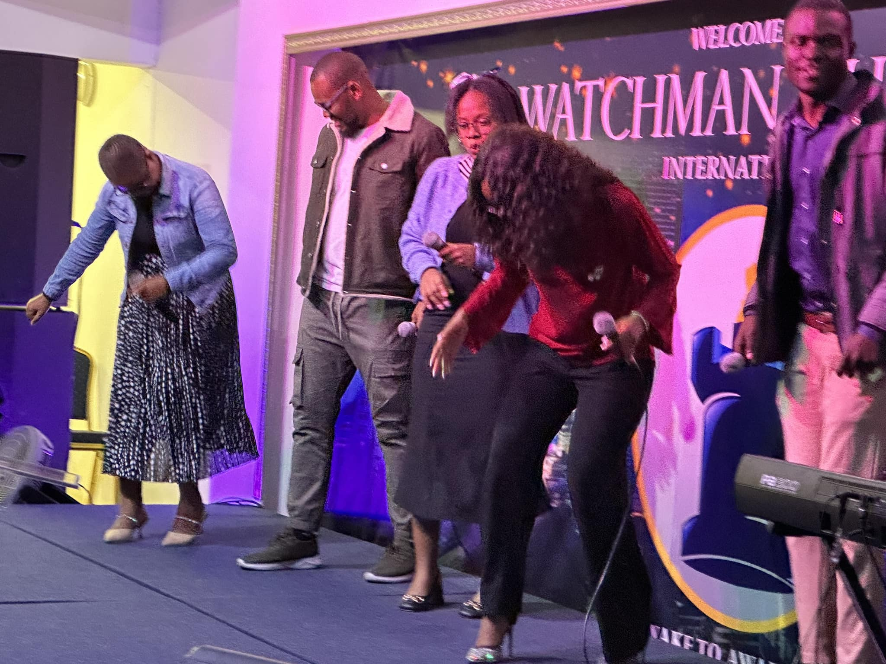

First Viral Declaration
“I am chosen, royal and set apart.”
One day, I felt led to speak about identity — because I believe one of the greatest struggles we face as believers is not knowing who we are in Christ.
About Kutlo
A life shaped by worship, carried by prayer, and devoted to creating moments where people are reminded of who they are in Christ.
The Beginning
Hi, my name is Kutlo. I was born and raised in a small town in Botswana called Gantsi. My journey began early — I joined the worship team at the age of nine.
I didn’t fully understand it then, but I knew I was drawn to something real. Since then, worship has never just been something I do — it has become who I am.
For nearly two decades, I’ve served as a worship leader, growing through different seasons and encounters with Jesus.
In 2015, I co-founded a worship movement called Mobile Worship, with a vision to cultivate a culture of worship rooted in presence, not performance.
But over time, I began to understand something deeper about my calling.
To be a servant and vessel of God's Presence that brings healing and restoration to people’s lives.

The TikTok Journey
TikTok became a space where that calling found expression. What started as a desire to preach the Gospel and share declarations grew into something I never fully planned.
First Viral Declaration
One day, I felt led to speak about identity — because I believe one of the greatest struggles we face as believers is not knowing who we are in Christ.
A Growing Movement
That message resonated. My first declaration video went viral. Then came “Good Morning Holy Spirit” — and from there, everything began to grow.
“And ye shall know the truth, and the truth shall make you free.”
John 8:32
“The Spirit of the Lord is upon me… to heal the brokenhearted.”
Luke 4:18
“For we walk by faith, not by sight.”
2 Corinthians 5:7
A Community of Prayer
Today, that space has become a community of over 250,000 people. Every Sunday, we gather for prayer. And through those moments, I’ve seen something powerful — healing.
Not just encouragement… but real healing. People often share that the prayers have brought peace to their hearts, clarity to their minds, and healing to their souls. That’s something I don’t take lightly.
Music as Ministry
More recently, I’ve stepped into music more intentionally. What was once spoken in prayer is now being carried through sound.
My music is an extension of that same calling — to reach, to remind, and to restore.
At the core of everything I do is this: to carry a message that brings people back to Jesus, and to create moments where healing can take place.
Early Worship Years
Long before the music releases, the videos, and the digital community, there was a young boy learning to serve God through worship. These moments are a reminder that the calling did not begin on a stage — it began in surrender.
A life shaped by worship
"Worship involves Jesus pouring his love on people, and their response is to pour their love back on him in an exchange."- Kim Walker-Smith
Formed in Service
Worship is being able to come before God and it is about understanding who he is. He is God! So when you are worshipping God, you know right away that it isn't about you but it is about him" - Cece Winans
“Since then, worship has never just been something I do — it has become who I am.”
And to create moments where healing can take place.
Connect With Kutlo arrow_forward